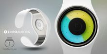

ziiiro介绍
ZIIIRO品牌于2010年在德国诞生。第一款ZIIIRO手表的设计既没有指针，也没有数字符号，只有不断随时变化的圆圈。极简主义是他的设计主旨，在整体设计中没有任何赘余成分。在享受这种极简之美的同时，你能轻松适应全新的读表方式
产品介绍
ZIIIRO Celeste 天空系列
ZIIIRO Mercury 水星系列
ZIIIRO Saturn 土星系列
ZIIIRO Gravity 重力系列
ZIIIRO Aurora 极光系列
ZIIIRO Orbit 轨道系列
ZIIIRO Ion 离子系列
ZIIIRO Saturn 土星系列
ZIIIRO Aurora 极光系列

ZIIIRO Orbit 轨道系列